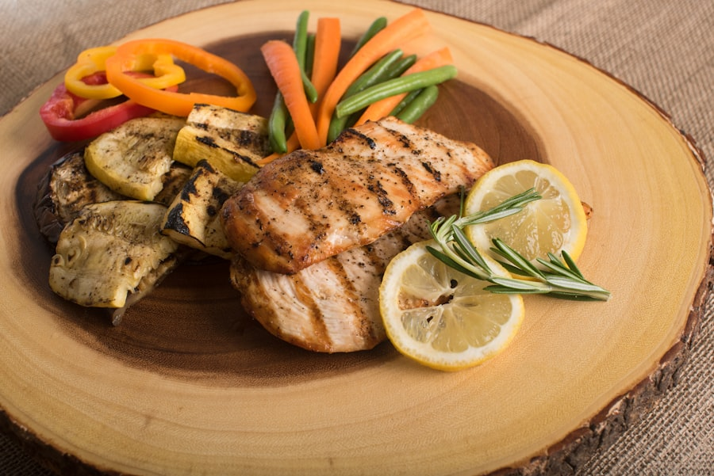
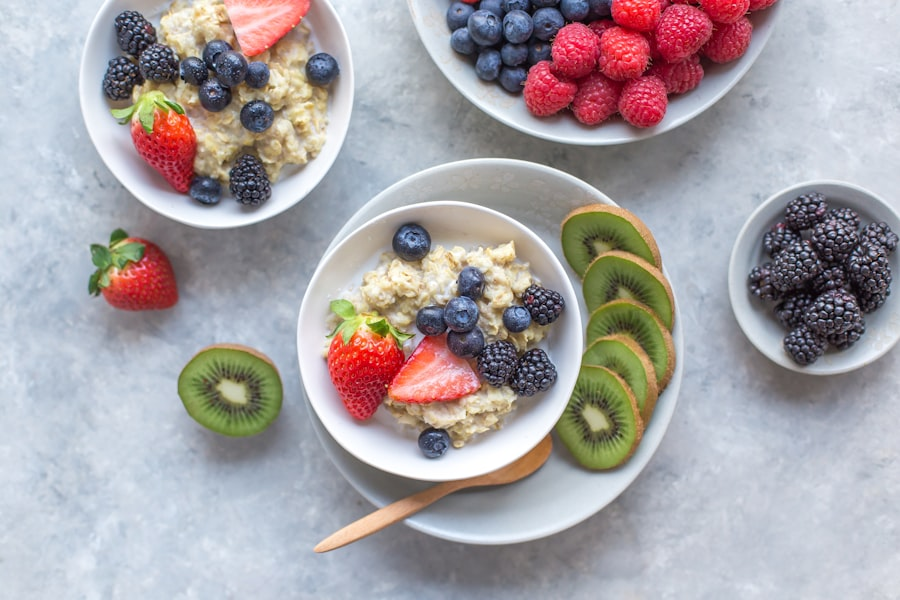
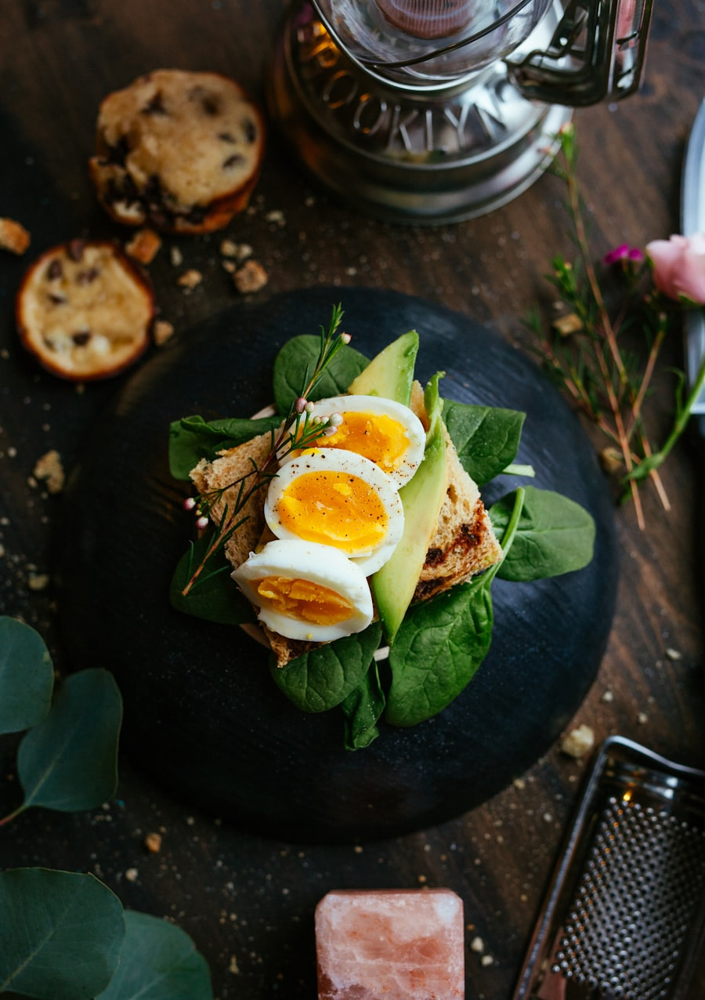
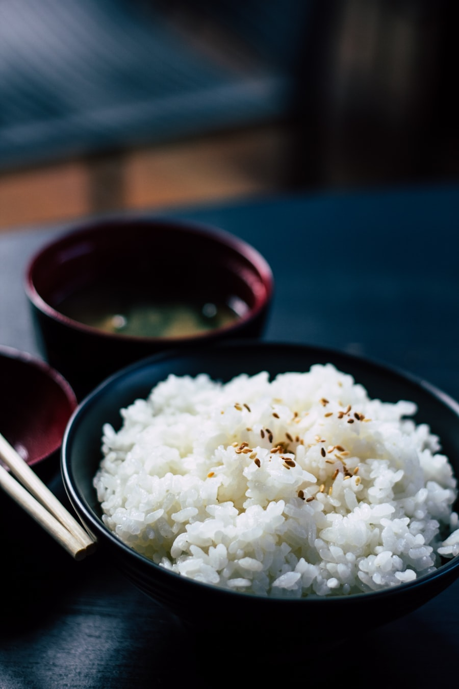
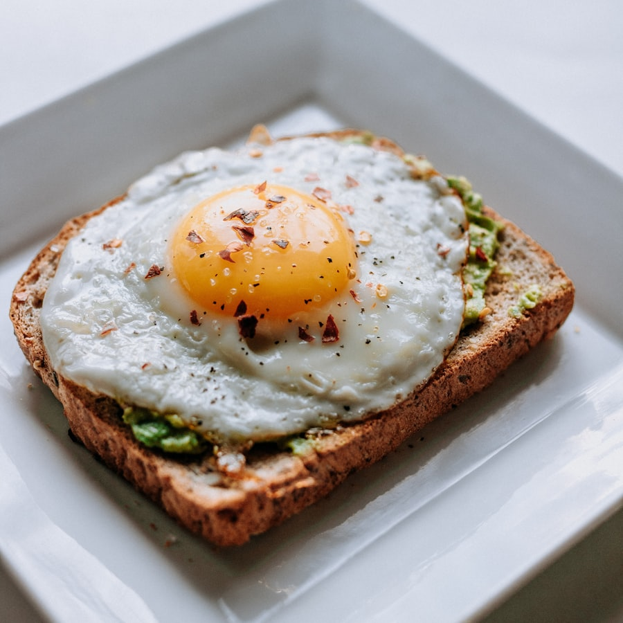

320 سعرةصدر دجاج مشوي + خضار
مصدر بروتين خالٍ من الدهون مع خضار ملونة غنية بالألياف — الأساس الكلاسيكي للتنشيف.
45غبروتين12غكارب8غدهون
Nutrition · الأكل الصحي
لا تنشيف بدون مطبخ منضبط. وجبات غنية بالبروتين ومتوازنة الماكروز تدعم خسارة الدهون مع الحفاظ على العضل.

320 سعرةمصدر بروتين خالٍ من الدهون مع خضار ملونة غنية بالألياف — الأساس الكلاسيكي للتنشيف.
 380 سعرة
380 سعرةغني بأوميغا-3 والبروتين عالي الجودة، يدعم الاستشفاء وصحة القلب والمفاصل.

340 سعرةكربوهيدرات بطيئة الامتصاص تمنحك طاقة ثابتة قبل التمرين وتقلّل الجوع طوال الصباح.

210 سعرةبروتين كامل القيمة وفيتامينات أساسية — وجبة سريعة مثالية للفطور أو سناك بعد التمرين.
 300 سعرة
300 سعرةتوازن مثالي بين البروتين النباتي والكارب والألياف، خفيفة على المعدة وغنية بالعناصر.

260 سعرةمصدر كارب نظيف يرافق البروتين في وجبة الغداء، يمدّك بالطاقة لحصص التمرين الثقيلة.
